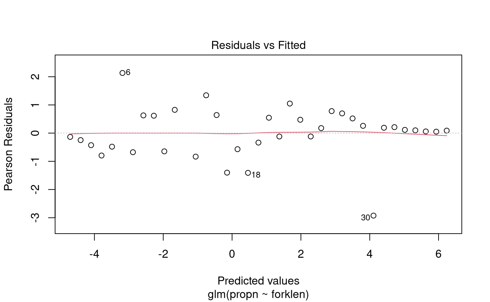

Problem
The experiment consisted of observing the number of fish at given fork lengths that entered a trawl codend, and the number of those fish that were retained by it.
In dataframe Haddock.df, codend is the
number retained in the codend and cover is the number that
escaped the codend into the cover region. The total number of fish is
therefore codend + cover.
The variables of interest were:
-
propn: The proportion of fish caught in the trawl codend. -
forklen: The fork length of the fish (in cm). (This is the length measured from snout to the end of tail fin rays.)
Question of Interest
How does the length of the fish affect the odds of it being caught in the trawl codend?
Read in and Inspect the Data
Haddock.df = read.table("Haddock.txt", header = TRUE)
Haddock.df$n = with(Haddock.df, codend + cover)
Haddock.df$propn = with(Haddock.df, codend / n)
plot(propn ~ forklen, data = Haddock.df, xlab = "Fork length (cm)", las = 1)We can see that as the length of the fish increases, the proportion of fish caught in the trawl codend increases. Notably, it follows a S-shaped curve.
Model Building and Check Assumptions
Haddock.glm = glm(propn ~ forklen, family = binomial, weight = n, data = Haddock.df)
plot(Haddock.glm, which = 1)
summary(Haddock.glm)##
## Call:
## glm(formula = propn ~ forklen, family = binomial, data = Haddock.df,
## weights = n)
##
## Coefficients:
## Estimate Std. Error z value Pr(>|z|)
## (Intercept) -10.63219 0.86468 -12.30 <2e-16 ***
## forklen 0.30396 0.02363 12.86 <2e-16 ***
## ---
## Signif. codes: 0 '***' 0.001 '**' 0.01 '*' 0.05 '.' 0.1 ' ' 1
##
## (Dispersion parameter for binomial family taken to be 1)
##
## Null deviance: 432.464 on 35 degrees of freedom
## Residual deviance: 23.436 on 34 degrees of freedom
## (1 observation deleted due to missingness)
## AIC: 79.75
##
## Number of Fisher Scoring iterations: 5
1 - pchisq(23.436, 34)## [1] 0.9133009## Waiting for profiling to be done...## 2.5 % 97.5 %
## (Intercept) 3.893019e-06 0.000117379
## forklen 1.297561e+00 1.424118770## Waiting for profiling to be done...## 2.5 % 97.5 %
## (Intercept) -99.99961 -99.98826
## forklen 29.75615 42.41188Methods and assumption Checks
The data recorded the number of fish that entered the codend and the number of those fish that were retained, for fish of different fork lengths. We therefore fitted a Binomial GLM with a single predictor of fork length (numeric). The response was treated as grouped data, with each group corresponding to a specific value of fork length.
Taking into account the fact that we expect small positive residuals from length classes with high retention probability, the residual plot from fitting the binomial model showed no strong trends. There was no evidence of overdispersion (P-value = 0.91) so we can trust the results from this binomial model.
Our final model was where is the odds of retention for fish at the th value of fork length.
Executive Summary
We aimed to investigate the relationship between fish fork length and the odds that the fish is retained in the trawl codend after entering it.
We estimate that for every 1 cm increase in the fork length of a haddock, the odds that it is retained in the codend increase by between 30% and 42%.